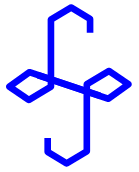
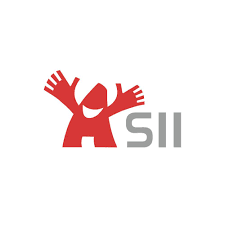
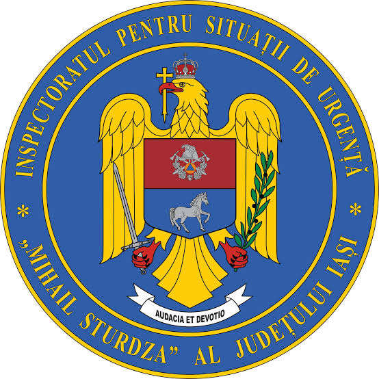
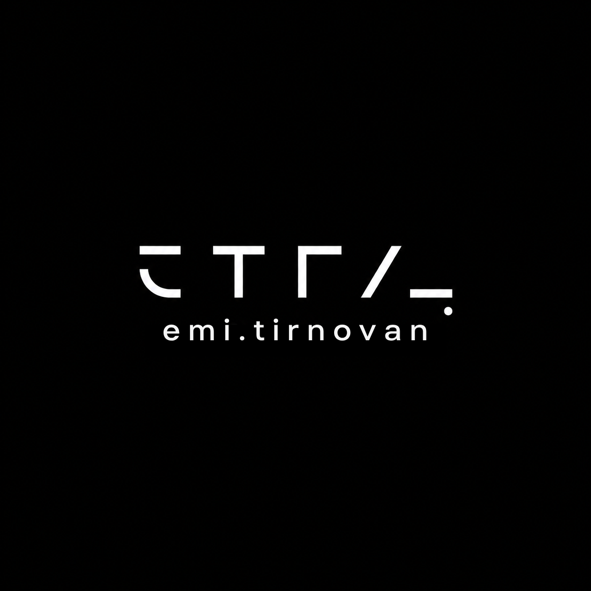
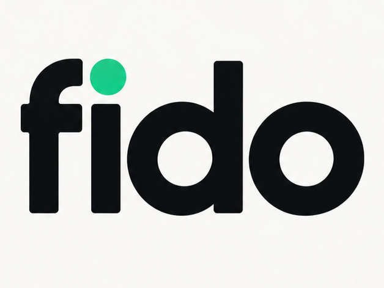

Passionate about
Engineered interactive, component-based user interfaces with React and JavaScript during an intensive summer internship. Integrated third-party REST APIs, resolved cross-browser compatibility issues, collaborated in agile development sprints, and built a solid foundation in problem solving, clean code practices, and rapid adaptability.
A selection of software engineering systems, full-stack web platforms, and academic repositories.
A full-stack web application for discovering, configuring, and pricing smart home setups with automated compatibility checks, inspired by PCPartPicker. Features interactive multi-room planners, automated hardware validation, and cloud infrastructure.
View RepositoryA full-stack AI-powered music studio that isolates audio tracks using Demucs and detects chords via Librosa. Features real-time track synchronization, automated BPM detection, and smart transposition to turn any YouTube song into an interactive practice session.
View RepositoryA peer tutoring platform for university students featuring AI-powered semantic search with Ollama embeddings (and classic keyword fallback), optimistic concurrency booking, strict domain scheduling rules, and state-machine lifecycle management.
View RepositoryA comprehensive web platform for camping enthusiasts and campsite owners. Features interactive OpenStreetMap exploration with geolocation filtering, custom booking flows, community reviews & media sharing, personalized user dashboards, and owner administration tools.
View RepositoryA clinical telemedicine management system connecting patients with medical specialists. Includes consultation scheduling, patient health record tracking, electronic prescriptions, doctor calendars, and an advanced relational database backend powered by custom stored procedures and triggers.
View RepositoryA multithreaded TCP-based client–server networking application delivering real-time train schedule details, including automated departures, arrivals, estimated delays, and route tracking. (Computer Networks Course Project).
View RepositoryAn educational compiler and execution runtime capable of tokenizing, parsing, and running algorithms written in standardized Romanian educational pseudocode. (Programming Language Principles Project).
View RepositoryBachelor of Science in Computer Science. In-depth coursework in Data Structures, Advanced Algorithms, Object-Oriented Programming (Java, C++), Computer Networks (TCP/IP), Database Management Systems (SQL/Oracle), Operating Systems, and Software Engineering methodologies.
Visit Official Faculty Website
High School Diploma, Mathematics-Informatics intensive profile. Solid foundation in C/C++ programming, algorithmic thinking, competitive problem solving, relational databases, and discrete mathematics.
Visit High School Website
Served as Team Leader at the FII Student summer camp, guiding participants through interactive tech sessions, mentoring incoming students, and coordinating team activities. Concurrently involved in the External Relations department, managing organizational communication and establishing partnerships for academic initiatives.
Association contact: emilian.tirnovan@asii.ro

Active volunteer firefighter with ISU. Completed rigorous operational training in emergency response, rapid crisis intervention, disciplined team coordination under high-stress conditions, and physical resilience. Dedicated to community safety and protective civic operations.
Served as a DiscoverEU ambassador during 2023 under the European Union's Erasmus+ program. Promoted youth cultural exchange, independent travel opportunities, and cross-border connectivity among young Europeans through community outreach.
DiscoverEU Program DetailsBridging software engineering, digital product incubation, and modern digital promotion.
I am expanding into the entrepreneurial space with a dedicated focus on building end-to-end digital applications and modern digital promotion concepts. Rather than solely developing code, the goal is to identify real-world business friction points and deliver scalable, intuitive solutions that generate direct commercial value for local businesses and communities.
From intelligent customer retention platforms to customized business applications, new digital concepts are currently in active incubation.

A modern product venture dedicated to conceptualizing, developing, and promoting next-generation digital tools and tailored web applications for businesses aiming to modernize their customer touchpoints.

One of the premier incubation prototypes: a smart digital loyalty ecosystem created to replace easily lost paper punch-cards. Empowers modern coffee shops, restaurants, and retail spots with frictionless QR-based digital rewards, customer retention mechanisms, and merchant analytics.